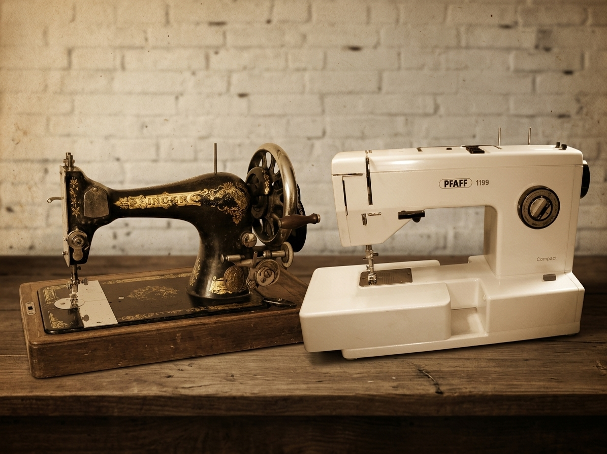

"Born from memories, stitched by hand
Patch & Posy was born from memories. I grew up watching my mother sew and embroider, surrounded by colourful fabrics, threads and little pieces of creativity. Her old Singer was part of those memories — a simple machine that became part of my childhood and quietly passed on a love for making things. Years later, my PFAFF sits beside me as I continue that journey in my own way. Patch & Posy is my little space for patchwork, sewing and thoughtful things for the home — from quilts and bedspreads to tablecloths, kitchen pieces and useful little accessories. Every piece begins with an idea, fabrics and a lot of patience. There is something special about taking individual pieces and bringing them together to create something useful, beautiful and uniquely its own. By profession, I am a Software Quality professional, where attention to detail has been part of my work for decades. Somehow, that same patience and eye for detail have followed me into my sewing room. 😊 But Patch & Posy is not about perfection or mass production. It is about creating with purpose, enjoying the process, and bringing a little warmth and personality into everyday spaces. This journey is dedicated to the loving memory of my parents and my mother-in-law, whose love, values and encouragement continue to inspire me. And to my husband, my biggest supporter — thank you for believing in this little dream and encouraging me to bring it to life. ❤️ From my mother's Singer to my PFAFF, the machines may be different, but the love for creating remains the same.
Some people inherit jewellery; I inherited my mother's love for needle, thread, and making a home beautiful. — Founder, Patch & Posy